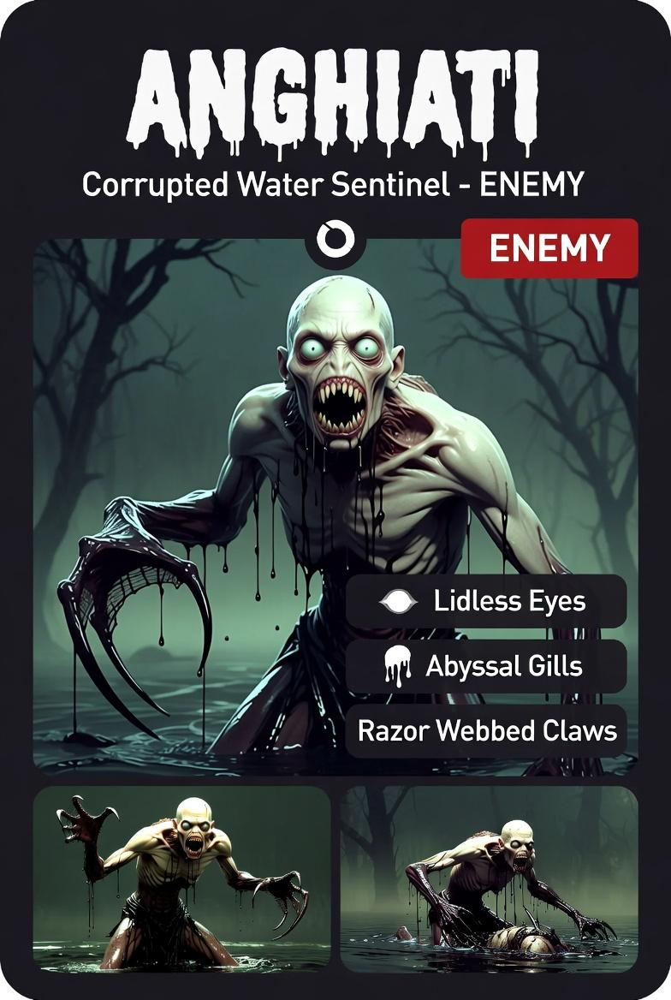

Corrupted Water Sentinel
Inizialmente uno. Poi tre. Poi una marea.
ENEMY⬡ DA IMPLEMENTARE#D0CEC0#243430#0A0A0A| Zona | Hex | |
|---|---|---|
| Pelle cadaverica (base) | #D0CEC0 | |
| Ombre pelle / vene | #4A5840 | |
| Cavità / bocca | #2A1A18 | |
| Denti | #E0D8C0 | |
| Occhi senza palpebre | #D8E4DC | |
| Fluido / gocce nere | #0A0A0A | |
| Corpo inferiore (acquatico) | #182420 | |
| Pinne / artigli | #2A2020 | |
| Acqua / palude BG | #243430 | |
| Accenti corrosivi | #4A6050 |
| Meccanica | Dettaglio |
|---|---|
| Liquido corrosivo | Al contatto e come proiettile — ignora parte della riduzione danno |
| Sibili spezzati | Disorientamento — input invertiti o rallentati |
| Stridio acuto | Finestra di vulnerabilità forzata → attacco |
| Weakness fuori dall'acqua | Stat ridotte lontano da tile acqua |
| Wave escalation | Spawn progressivo: 1 → 3 → marea |
| Morte | Corpo si scioglie — nessun blood pool — acqua torna al ruscello |